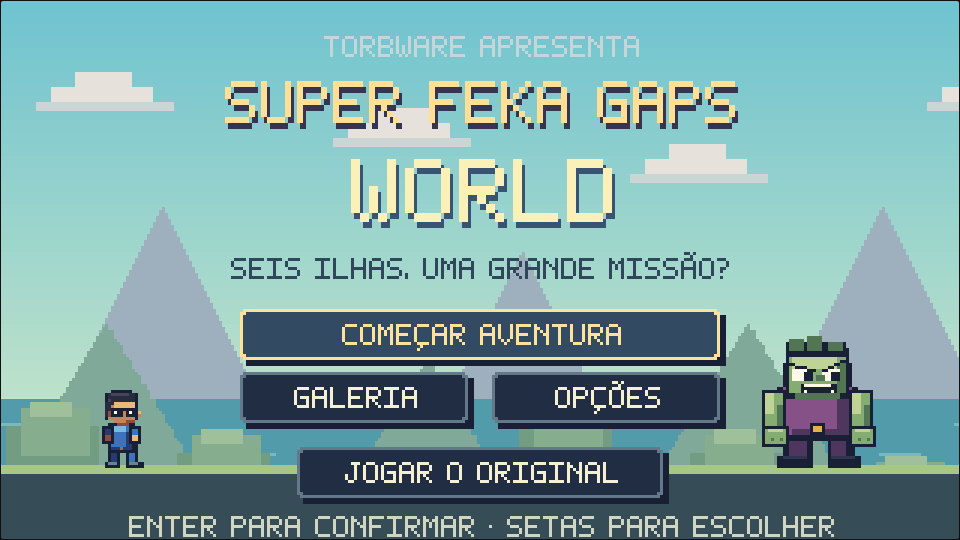
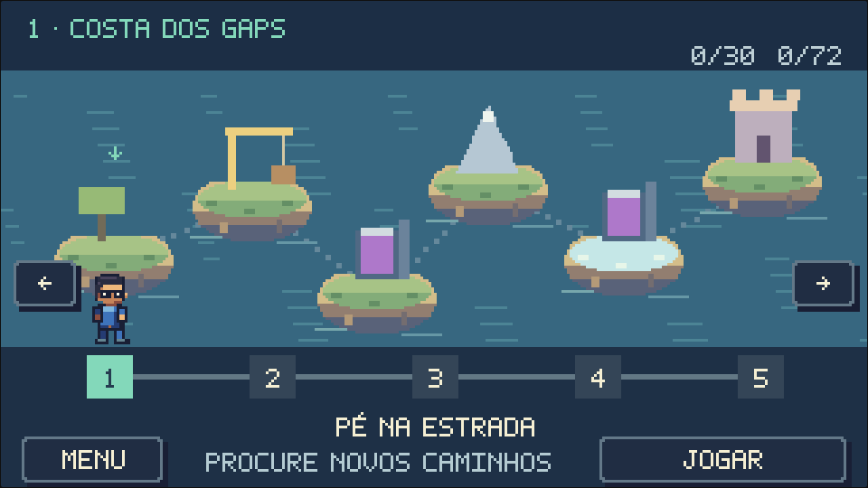
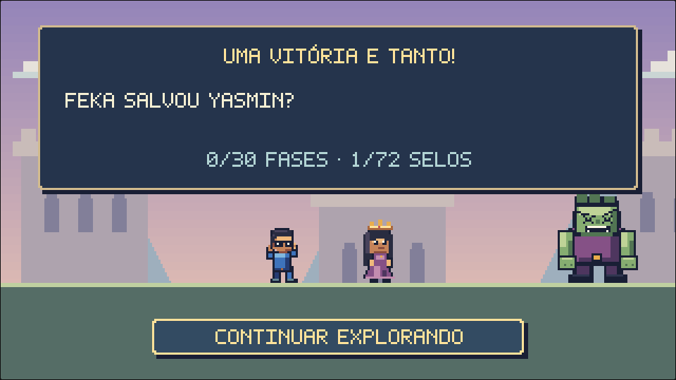
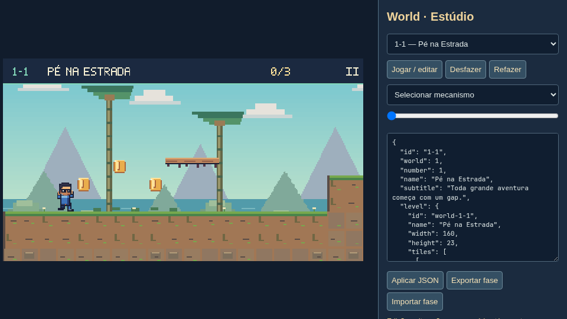

Torbware · Pixel art nativa · TypeScript / Canvas
Super Feka Gaps World
Seis ilhas, três rivais e uma missão que Feka leva muito a sério. Esta galeria mostra os assets e capturas da implementação, gerados diretamente pelo renderizador.
Jogar World · Abrir o estúdio · Documento de direção · Verificação no navegador

Tela inicial. A aventura original também continua disponível.
O arquipélago

Mapa e trilha de cinco fases por mundo.
A pergunta do encerramento permanece.Os percursos reconstruídos
Explorar as 24 fases em panorâmicas → · Alturas, rotas alternativas, estruturas e posições iniciais dos mecanismos.
Os seis mundos
Três personagens, seis confrontos
As arenas abaixo são cenas preparadas para inspeção visual. A verificação de combate registra separadamente os confrontos executados por controles simulados.
Inimigos em movimento
Antecipação, ação e recuperação têm poses próprias. Escolha um inimigo e um estado para inspecionar os quadros usados no jogo.
Atlas de sprites
Quadros transparentes na resolução nativa. As fontes editáveis são os geradores PixelGrid; a exportação PNG acompanha metadados de posição e paleta.

Trilha original
Prévias WAV de quatro frases do mesmo sequenciador usado no jogo. A síntese acontece em tempo real durante a partida; estes arquivos permitem ouvir e revisar os temas separadamente.
Ferramenta de criação

Terreno, mecanismos, destinos, ligações, importação/exportação e prévia com progresso isolado.